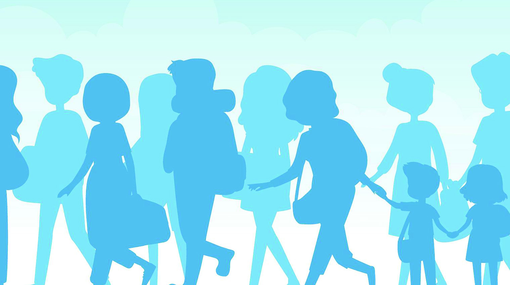
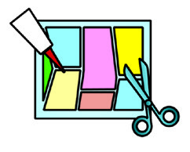

TOWARDS A GENDER-
NEUTRAL SOCIETY
8
This is a news report about an observation made by the Honourable
High Court of Kerala on 8 August 2023.
What do you notice from this news?
y
y
Have you ever come across the terms 'gender' and 'sex' that are included in this
news? In which official documents are these mentioned?
Gender and sex are distinct
concepts; individuals have the
right to self-identify their gender.
Honourable High Court of Kerala
Page 47
Page 48
Chapter 8
152
Social Science I
The terms 'gender' and 'sex' are often used interchangeably
in various identification documents, but in some records and
application forms 'male/female/others' is used instead.
Sex and Gender
In the news report given at the beginning of this lesson, the
Honourable High Court of Kerala has observed that sex and
gender are two distinct concepts.
Sex refers to the biological characteristics that define males and
females. It refers to the difference between males and females
in chromosomes, physical structures, hormones, genitalia, and
other physical factors.
Gender refers to the social, cultural and psychological
characteristics associated with the categories of male and female
through particular social contexts. For example, some societies
consider pink as the colour for women and blue as the colour for
men. However, there is no biological base for this notion. This
has been a social practice for years. Have you noticed similar
situations?
Gender is neither biological nor constant. It is acquired and
strengthened through social intervention. That is, gender is a
social construct. Gender is a concept beyond sex. Each society
has constructed many expectations and behaviours associated
with ‘men’ and ‘women.’ For instance, it is commonly observed
that societal expectations often dictate that boys are more suited
Complete the following table
y
Aadhaar card
y
School admission records
y
Birth certificate
y
Ration card
y
Page 49
Towards a Gender-Neutral Society
153
Standard IX
to playing with toys like guns, whereas
girls are often expected to play with
dolls. Similarly, individuals acquire
gender expectations and behaviours
from society through socialisation. These
are different in different cultures. They
also change with the passage of time.
All individuals may not have the gender
that the society expects them to have on
the basis of their sex. Some people may
have gender that does not match their
sex. Those who have gender identity
different from the socially expected one
are called Transgenders.
Socialisation
Socialisation is a lifelong process
from birth and continues till death.
Babies do not know about society or
social behaviour at the time of birth.
In order to get integrated as a part of
the society, they learn the values and
practices of the society at different
stages. This learning process is called
socialisation.
Transgender
A transgender is a person whose gender does not correspond with the gender
he was assigned at the time of birth. This includes Transman and Transwoman.
Clause (K) of Section 2, TPPR Act, 2019)
Sex categorises individuals as biologically male or female. Gender
makes masculinity or femininity in us. The terms masculinity and
femininity refer to the behaviours the society expects from men
and women. For example, men are considered symbols of strength
and women that of affection. Another example is the assumption
that men are not meant to cry and women are emotional. Find
more examples.
Sex is inherited at the time of birth and thus it is an ascribed status.
Gender is an achieved status. It is learned and formed from the
culture we live in.


Page 50
Chapter 8
154
Social Science I
We have already discussed how sex is different from gender.
Gender status is determined not based on birth or physical features,
but on the social interactions and behavioural patterns created by
social practices.
Status refers to an individual's position within the social system.
Status plays a significant role in determining how an individual
is perceived and treated within a social system. Every society
categorises its members based on their status, leading to social
stratification. Thus, individuals are defined as high status or low
status individuals in the society.
Discuss the difference between sex and gender in the class and
prepare notes.
Sex
Gender
y
Refers to biological features
y
Refers to social, cultural
and psychological features
Expand the table:
Ascribed Status and Achieved Status
Ascribed status is the social status an individual gets by birth. Age, race, and sex
which cannot be chosen by the individual are examples of ascribed status.
Achieved status is the social status achieved by individuals through their own ability
and choice. Educational qualification, income, occupational skill, etc. are examples
of achieved status. They are learned from society in course of time. Gender is an
achieved status as it is acquired and reinforced through social interactions.


Page 51
Towards a Gender-Neutral Society
155
Standard IX
Social Stratification
Social stratification is the social placement of individuals in society into different
hierarchical layers or strata without equality. This system operates in a way that
individuals in higher stratum enjoy greater status, while those in lower stratum
have lower status. Historical examples of social hierarchies include slavery and the
caste system.
Claudia Goldin
Claudia Goldin was awarded the Nobel Prize in Economic
Sciences in 2023. The research was about working women
and the causes of gender differences in labour force
participation and earnings. Goldin became the third
woman to receive the Nobel Prize in Economics.
Gender Roles
What do you
want to become in
your life?
I love car racing. I want
to become a car racer in
future.
Can girls do
that?
Do men and women in our society share equal status in the social
hierarchy? Have you noticed any disparity?


Page 52
Chapter 8
156
Social Science I
Haven't you listened to the conversation among three friends?
What is your response to this conversation? Have you heard the
statement that certain jobs should be done only by individuals of a
certain gender? Do jobs actually need such gender discrimination?
A role is the expected behaviour associated with a status. The term
'Gender Role' refers to the societal expectations regarding what
men and women should do, think, say and wear, and how they
should behave. Gender Roles represent the specific characteristics,
attitude, and actions that a society associates with masculinity
and femininity. For example, some societies hold the idea that
men should be the primary breadwinners, while women should
manage domestic duties. These roles limit individual choices and
potential. A lot of norms and habits are evident in our society
based on these gender roles.
Are duties allocated based on gender in your school? Typically,
who performs most of the following duties in your school?
Complete the checklist.
Duties
Boys
Girls
Singing the prayer song in school
assembly
Arranging benches and desks
Arranging the digital tools in the
classroom
Discharge duties outside, which
are not of the class
Perform a role play in class focusing on situations in which duties
and responsibilities traditionally assigned are now equally shared
between men and women.
From this, we can understand that today, in schools, such
activities are shared by boys and girls together.

Page 53
Towards a Gender-Neutral Society
157
Standard IX
y
Do not waste drinking water
y
Do not physically harass anyone
y
Respect the elderly citizens
y
Two-wheeler riders should wear helmets
y
Do not discriminate anyone on the basis of physical features
y
Every individual has the right to legitimate elections
y
Protect the elderly citizens
y
Giving and accepting dowry is a crime
Gender and Social Norms
This picture refers to the social evil of 'Sati' that was
once practised in India. Sati was a cruel practice
where a widow was forced to immolate herself on her
husband's pyre. 'Untouchability' was another social
evil that existed in India. This social evil categorised
members of a society into hierarchically ordered castes,
insisting that individuals from castes considered lower
maintained a defined distance while they interacted
with members of the castes considered higher. Sati and
untouchability were observed in the past societies as
if they were laws. However, these practices were later
outlawed and abolished through legislation as part of a
broader social reform movement.
There are certain norms around us which are unwritten but had
existed in a society since time immemorial. They are known
as ‘Social Norms.’ Social norms are unwritten laws regarding
beliefs, behaviours and attitudes that are considered acceptable
in a certain social group or culture. Greeting and thanking
individuals are examples of social norms.
Look at the following statements:
The Indian Parliament abolished Sati through the Commission of Sati
(Prevention) Act of 1987. This law prohibits the practice of Sati, whether
by compulsion or voluntarily, and any statement in support of Sati.
The evil practice of untouchability was abolished in India through Article
17 of the Constitution and the Untouchability (Offences) Act of 1955.

Page 54
Chapter 8
158
Social Science I
Classify them into laws and norms.
Identify more laws and norms like this and include them in the
table properly.
Why do illegal norms still exist in society today? Write your
comments in the activity book.
Gender Stereotypes
Read the statements below:
Laws
Norms
y
Do not physically harass anyone
y
Respect the elderly
All women are
affectionate
Women in general
cannot do works
that require much
physical exertion
Do you think the given statements are correct? Are they not simply false notions
held by the society traditionally?
It is the responsibility
of the man to support
the entire family
Sports and driving are
more suitable for boys
Most of the difficult
works are done by
men


Page 55
Towards a Gender-Neutral Society
159
Standard IX
Many people generally see these things as their inherent qualities which
were mistaken by society as the quality of men and women. Stereotypes
are created by simply presenting such incorrect or partially correct
notions as the basic qualities of men and women.
y
Curry powder
y
Dishwashing implements
y
Bikes and cars
y
Cosmetics
y
Sports products
y
Utensils, stove and tools used in
kitchen
y
Financial institutions
y
Cement
Generally Women
Generally Men
Stereotype
A stereotype is a social classification of people into groups based on oversimplified
and generalised assumptions. Stereotypes are formed on the basis of class, caste,
religion, occupation, language, gender and the like.
Can you find out examples of gender stereotypes? Add them below.
y
Women are good as nurses. Men are not fit for that
y
Gender roles, norms, and stereotypes are the reasons for gender
inequality.
Media and Gender Stereotypes
Have you noticed the advertisements that appear on television and
online streaming platforms? Who do you think comes more on screen to
endorse the products? women or men. Note your observations.

Page 56
Chapter 8
160
Social Science I
Observe more advertisements. Which gender is predominantly
represented among them?
It can be observed that these advertisements reinforce gender
stereotypes in several ways.
Language and Gender Stereotype
There is also gender difference in the languages we use. The
nouns in many languages are classified on the basis of gender.
How have the terms like ‘citizen’ and ‘man’ that seemingly refers
to males come to represent both males and females? For instance,
there is no such term as ‘male-doctor,’ but ‘lady doctor.’ Why
does the word ‘doctor’ seem to be mostly addressed to men? The
words and usages that are used to refer to areas that were once
monopolised by men continue to be used in this way.
The repeated usage of such terms reinforces stereotypes. How
can we defend the reinforcement of such stereotypes through
language? Gender-inclusive terms and usages are effective ways
to offend these stereotypes. Look at the following words:
Teacher
Engineer
Nurse
Are these words identifiable as male or female? These are
examples of gender-inclusive terms used in languages.
Identify gender-inclusive terms in the languages, list the words
and exhibit them in the classroom.
Haven’t you noticed that media and language are factors that
reinforce gender stereotypes? Family, educational institutions,
art and literature, etc., also reinforce gender stereotypes.

Page 57
Towards a Gender-Neutral Society
161
Standard IX
Organise a debate on “Language, family, art, literature, and
educational institutions reinforce gender stereotypes” and make
notes.
Haven’t you noticed that gender roles, norms and stereotypes
lead to gender differences? This causes gender discrimination
and atrocities based on gender which results in lack of equality
for men, women and other genders in society.
Gender-based Violence
What are the social issues indicated in these news headlines?
Are these atrocities based on gender?
Is there gender equality in our society?
Transgender insulted in public: Police take action
Transgender insulted in public: Police take action
based on Transgender Protection Act
based on Transgender Protection Act
“None should suffer like this.”:
“None should suffer like this.”:
Survivor of sexual assault to media
Survivor of sexual assault to media
Sexual assault in workplace: Action
Sexual assault in workplace: Action
against the institution that failed to report
against the institution that failed to report
Helped in female foeticide: License of
Helped in female foeticide: License of
doctor and hospital cancelled
doctor and hospital cancelled
Atrocity for dowry: Case filed
Atrocity for dowry: Case filed
against the in-laws
against the in-laws

Page 58
Chapter 8
162
Social Science I
Is the existence of these types of atrocities apt for a just society?
Upper Cloth Revolt (Marumarackal Samaram)
The struggle of the women of South Travancore for the right to wear clothes
during the early nineteenth century is known as the Upper Cloth Revolt. The long-
drawn struggle ended with the proclamation of the Travancore Government that
everyone, irrespective of caste or religion, had the right to wear the clothes they
chose. Still, due to caste rituals, many people could not wear the dress they chose.
Kallumala Uprising
It was mandatory for women from the Pulaya community, which was then
considered a lower caste, to wear necklaces made of stone or pieces of broken
glass. The Kallumala Uprising, led by Ayyankali, was held against this oppressive
practice in Perinad, near Kollam. It is also known as the Perinad Revolt.
A World Free of Gender Discrimination
Read the following short notes:
These are the instances of revolts in history led by women who
faced gender discrimination along with caste oppression. They
overcame discrimination by challenging the existing norms and
stereotypes.
Collect news and pictures related to gender violence and make a
collage. Exhibit your response to gender violence in the form of
slogans along with the collage. Also, prepare a short speech to be
delivered in the exhibition.
Just Society
A just society is one in which every individual receives equal social,
economic and political justice irrespective of caste, religion or gender.
“A Society is called a just society when every member of it enjoys
happiness and welfare.”
- V. R. Krishna Iyer


Page 59
Towards a Gender-Neutral Society
163
Standard IX
Terms of gender
discrimination prohibited in
court: Supreme Court
against stereotypes
Spoke against gender
equality: Employee
dismissed
Revealed gender
discrimination in
workplaces in Spain:
More than 200 women
Will take progressive
stance in cases of gender
discrimination: PM of
Canada
Look at the above news related to gender discrimination. What
information do you get from them?
Do individuals of different genders receive equal opportunities?
Do members of a particular gender get more opportunities in
certain areas?
A major cause that hinders gender equality is gender
discrimination. Gender discrimination is the process of
suppressing other genders for the sake of dominance of one
gender.
Gender in the Constitution
Article 14 of the Constitution of India ensures that all individu
als are equal before law. The Article 15 states that no individual
shall be discriminated against based on gender. In 2014, the Su
preme Court stated that gender is the base of the social status of
an individual along with sex.
The Supreme Court of India interpreted in the verdict of the 2014 case
of Nalsa Vs Union of India that different articles of the Constitution
clarify freedom in matters related to gender.

Page 60
Chapter 8
164
Social Science I
What can be done to eliminate gender discrimination and ensure
constitutional equality and freedom for all genders ? Discuss in
the class.
Indicators for Discussion :
y
Education that promotes gender equality
y
Challenging gender stereotypes
y
Challenging norms that encourage gender stereotypes
y
Ensuring gender-inclusive and equitable workplaces
Our constitution envisions a just society free from all inequalities.
Efforts should be made to ensure equal treatment for individuals
of all genders, promoting a society with equal justice. It is the
social responsibility of every member in society to participate in
this process of inclusion.
Article 14
Equality of all genders
Article 15
There shall be no gender-based discrimination against
any individual
Article 16
Equality of opportunity for all genders
Article 19 (1) (a)
All genders have the right to freely express their gender
identity through dress, behaviour and action
Article 21
All genders have the right to dignity, individual liberty
and privacy
Article 15A (e)
It is the fundamental duty of the Indian citizens to
renounce practices derogatory to the dignity of women
Let us get accustomed to the articles of the Indian Constitution
that are related to gender. Look at the table below.
Our Constitution has adopted the position that there should be a
fair society in the country where all these things must exist . But,
do all genders in our society get all the privileges equally?

Page 61
Towards a Gender-Neutral Society
165
Standard IX
y
Collect real-life stories of women who fought against gender discrimination
and develop a digital album.
y
Collect and exibit in the class, reports on those who have survived descrimination
based on gender.
Extended Activities

Page 62
Notes
Page 63
CONSTITUTION OF INDIA
Part IV A
FUNDAMENTAL DUTIES OF CITIZENS
ARTICLE 51 A
Fundamental Duties- It shall be the duty of every citizen of India:
(a) to abide by the Constitution and respect its ideals and institutions,
the National Flag and the National Anthem;
(b) to cherish and follow the noble ideals which inspired our national struggle
for freedom;
(c) to uphold and protect the sovereignty, unity and integrity of India;
(d) to defend the country and render national service when called upon to do so;
(e) to promote harmony and the spirit of common brotherhood amongst all the
people of India transcending religious, linguistic and regional or sectional
diversities; to renounce practices derogatory to the dignity of women;
(f)
to value and preserve the rich heritage of our composite culture;
(g) to protect and improve the natural environment including forests, lakes, rivers,
wild life and to have compassion for living creatures;
(h) to develop the scientific temper, humanism and the spirit of inquiry and reform;
(i)
to safeguard public property and to abjure violence;
(j)
to strive towards excellence in all spheres of individual and collective activity
so that the nation constantly rises to higher levels of endeavour and
achievements;
(k) who is a parent or guardian to provide opportunities for education to his child or,
as the case may be, ward between age of six and fourteen years.
Page 64
[Blank page]